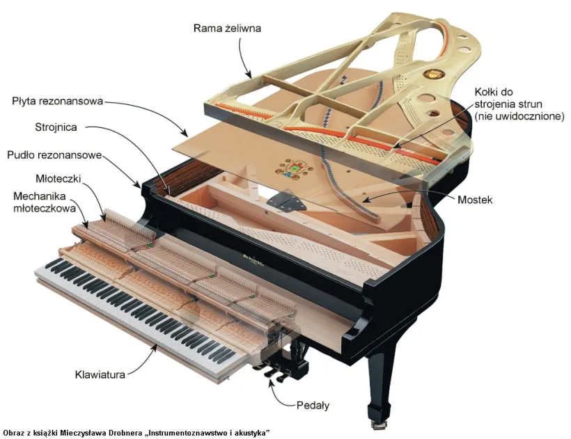

Jak zbudowany jest fortepian?
Fortepian to złożony instrument muzyczny, którego budowa łączy w sobie precyzję mechaniczną i kunszt rzemieślniczy. Składa się z wielu części, które razem pozwalają wydobyć dźwięki o niezwykłej barwie i dynamice.
Główne elementy fortepianu:
- Pudło rezonansowe – wzmacnia i nadaje barwę dźwiękom wydobywanym przez struny.
- Struny – drgają pod wpływem uderzenia młotków, tworząc dźwięk. Wykonane są ze stali i miedzi.
- Młotki – pokryte są filcem i uderzają w struny po naciśnięciu klawisza.
- Mechanizm klawiatury – składa się z dźwigni, które przekazują ruch palca na młotek.
- Pedaly – najczęściej trzy: prawy (sustain), środkowy (sostenuto) i lewy (una corda), które zmieniają sposób wydobywania dźwięku.
- Płyta żeliwna – utrzymuje napięcie strun (nawet do 20 ton!) i wzmacnia konstrukcję instrumentu.
Rodzaje fortepianów
Wyróżniamy dwa główne typy fortepianów:
- Fortepian koncertowy (grand piano) – duży, poziomy instrument o pełnym brzmieniu.
- Fortepian pionowy (pianino) – bardziej kompaktowy, z pionowo ustawionymi strunami, idealny do nauki w domu.
Przekrój fortepianu
Na poniższym obrazie możesz zobaczyć, jak wyglądają poszczególne elementy wewnątrz instrumentu:
